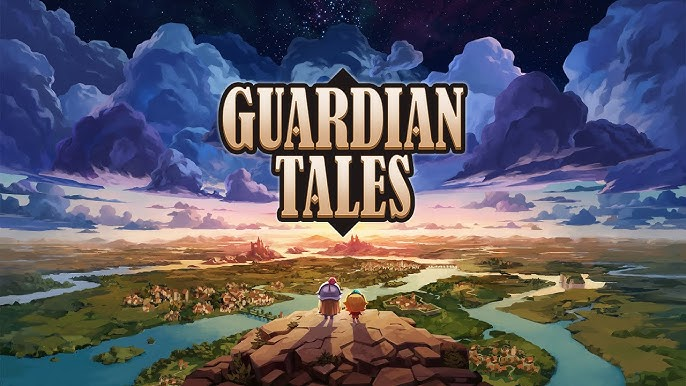
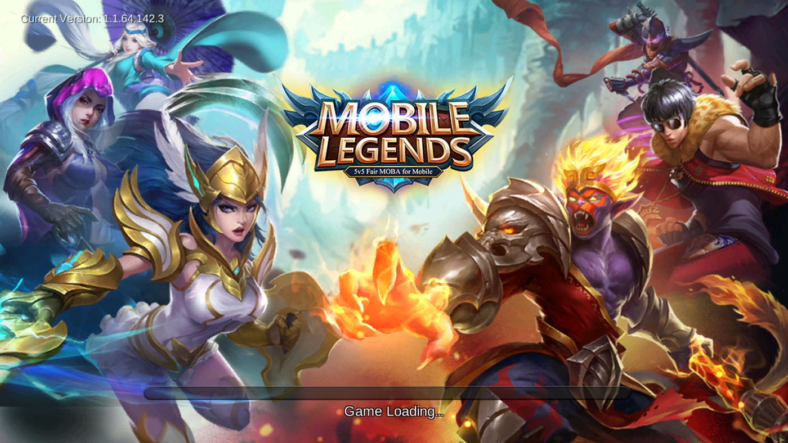
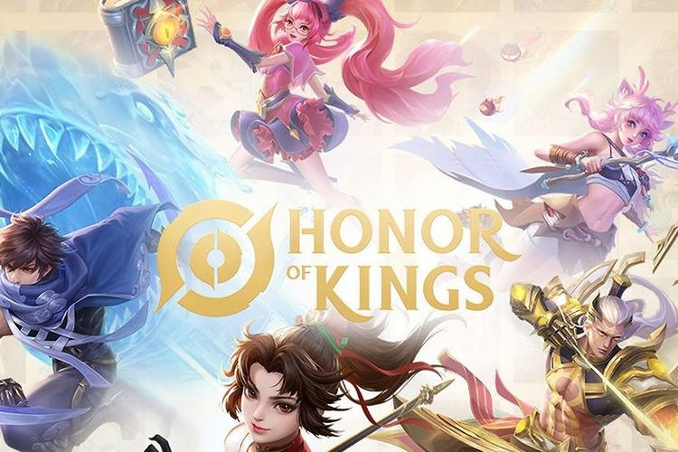
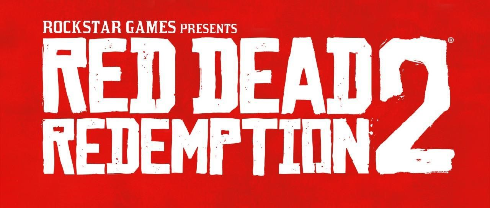
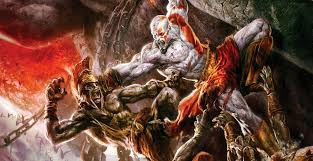
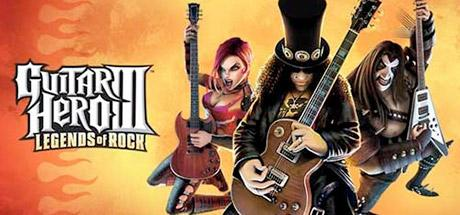

Game Android
Game Android? Game Android adalah permainan video yang dirancang
untuk dimainkan pada perangkat berbasis Android, seperti
smartphone dan tablet. Game-game ini mencakup berbagai genre,
termasuk aksi, petualangan, teka-teki, simulasi, dan banyak lagi.
Popularitas game Android sangat tinggi karena kemudahan akses
melalui Google Play Store, yang menyediakan ribuan judul game,
baik gratis maupun berbayar. Selain itu, game Android sering kali
menampilkan grafis yang canggih, kontrol layar sentuh yang
intuitif, dan dukungan untuk pembelian dalam aplikasi (in-app
purchases) yang memungkinkan pemain untuk memperluas pengalaman
bermain mereka. Game Android juga dapat dimainkan secara offline
atau online, memungkinkan interaksi sosial melalui fitur
multiplayer. Dengan berbagai pilihan yang tersedia, game Android
telah menjadi salah satu platform gaming terbesar di dunia,
menarik perhatian jutaan pemain dari berbagai kalangan.
Guardian Tales

Game Guardian Tales? game RPG aksi untuk perangkat mobile yang
dikembangkan oleh Kong Studios dan diterbitkan oleh Kakao Guardian
Tales adalah game RPG aksi untuk perangkat mobile yang
dikembangkan oleh Kong Studios dan diterbitkan oleh Kakao Games,
dirilis pada tahun 2020. Game ini menawarkan pengalaman bermain
yang unik dengan menggabungkan seni piksel bergaya retro dan
mekanisme permainan modern. Dalam permainan ini, pemain memulai
petualangan epik yang mencakup berbagai dunia, masing-masing penuh
dengan teka-teki yang harus dipecahkan, musuh yang harus dilawan,
dan karakter-karakter menarik yang bisa dikumpulkan.
Setiap karakter dalam Guardian Tales memiliki kemampuan unik, yang
memberikan kedalaman strategi dalam gameplay-nya. Game ini juga
dikenal karena alur ceritanya yang humoris dan kaya referensi
budaya pop, yang sering kali memparodikan elemen-elemen dari game,
film, dan media populer lainnya. Selain itu, Guardian Tales
menampilkan gameplay yang menantang dan memikat, yang dipenuhi
dengan berbagai tantangan dan rahasia yang menunggu untuk
ditemukan oleh pemain.
Kombinasi antara nostalgia dan inovasi dalam Guardian Tales
menjadikannya salah satu game mobile yang mendapat banyak pujian
dari para pemain dan kritikus.
Mobile Legends

Mobile Legends: Bang Bang adalah game MOBA (Multiplayer Online
Battle Arena) yang sangat populer di platform mobile, dikembangkan
oleh Moonton. Dirilis pada tahun 2016, game ini cepat menjadi
favorit di kalangan pemain di seluruh dunia, termasuk Indonesia.
Dalam permainan ini, dua tim yang masing-masing terdiri dari lima
pemain berjuang untuk menghancurkan base lawan sambil
mempertahankan base mereka sendiri.
Mobile Legends terkenal karena gameplay yang cepat dan kompetitif,
dengan setiap pertandingan biasanya berlangsung sekitar 10-15
menit. Pemain dapat memilih dari berbagai hero dengan peran yang
berbeda seperti tank, marksman, mage, assassin, dan support. Game
ini juga terus diperbarui dengan konten baru, termasuk hero, skin,
dan event, yang membuatnya tetap segar dan menarik bagi komunitas
pemainnya. Mobile Legends juga memiliki komunitas eSports yang
besar, dengan turnamen yang diadakan secara rutin di tingkat lokal
dan internasional, memberikan kesempatan bagi pemain profesional
untuk bersaing di panggung global. Hal ini menjadikannya salah
satu game mobile paling berpengaruh di dunia.
Honor Of King

Honor of Kings, yang dikenal juga sebagai King of Glory di
beberapa negara, adalah game mobile yang sangat terkenal di genre
MOBA (Multiplayer Online Battle Arena). Dikembangkan oleh Tencent
Games, game ini menawarkan pengalaman bermain yang seru dan
kompetitif di perangkat mobile. Di dalam Honor of Kings, pemain
bergabung dalam tim yang terdiri dari lima orang dan bertempur
melawan tim musuh dengan tujuan utama menghancurkan markas musuh.
Setiap pemain memilih pahlawan dari daftar karakter yang memiliki
kemampuan unik dan peran yang berbeda, seperti tank, mage, atau
marksman. Kemampuan ini memungkinkan strategi yang beragam dan
permainan yang dinamis.
Game ini menyediakan berbagai mode permainan, termasuk mode
standar 5v5 dan mode tambahan seperti 3v3 atau permainan solo,
yang memungkinkan pemain memilih jenis pertandingan sesuai
keinginan mereka. Peta permainan dirancang dengan jalur (lanes)
utama, area hutan, dan struktur yang harus dihancurkan untuk
mencapai kemenangan. Struktur tersebut termasuk turret yang harus
dihancurkan untuk membuka jalan menuju markas musuh. Honor of
Kings juga memiliki elemen sosial yang kuat. Pemain bisa
berinteraksi dengan teman, bergabung dalam guild, dan
berpartisipasi dalam turnamen untuk menunjukkan keterampilan
mereka. Sistem peringkat dan turnamen menambah aspek kompetitif
game ini, memotivasi pemain untuk terus meningkatkan keterampilan
mereka.
Game PC
PC games adalah permainan video yang dimainkan di komputer pribadi
(PC). Game ini menawarkan berbagai genre, mulai dari petualangan,
RPG, aksi, hingga strategi. Salah satu keunggulan PC games adalah
kemampuannya untuk memanfaatkan perangkat keras yang lebih kuat
dibandingkan konsol, memungkinkan grafis yang lebih canggih dan
pengalaman bermain yang lebih imersif. Selain itu, banyak PC games
yang mendukung modding, yang memungkinkan pemain untuk mengubah
atau menambahkan konten ke dalam game. Game PC juga terkenal
karena komunitasnya yang luas dan dukungan multiplayer online yang
kuat.
Elden Ring

Elden Ring adalah game aksi RPG yang dikembangkan oleh
FromSoftware dan diterbitkan oleh Bandai Namco Entertainment.
Dirilis pada Februari 2022, game ini merupakan kolaborasi antara
Hidetaka Miyazaki, pencipta seri Dark Souls, dan George R.R.
Martin, penulis novel A Song of Ice and Fire yang menjadi dasar
serial TV Game of Thrones.
Elden Ring menampilkan dunia terbuka yang luas dan penuh misteri,
yang disebut The Lands Between. Pemain dapat menjelajahi dunia ini
secara bebas, menghadapi berbagai musuh yang menantang, mengungkap
rahasia tersembunyi, dan berinteraksi dengan karakter yang
mendalam dan kompleks. Mekanisme permainan menggabungkan
elemen-elemen khas dari game-game FromSoftware, seperti tingkat
kesulitan yang tinggi, sistem pertarungan yang strategis, dan
narasi yang dalam.
Game ini mendapat pujian luas atas desain dunianya yang imersif,
kebebasan eksplorasi, dan kedalaman gameplay-nya, menjadikannya
salah satu game paling diantisipasi dan paling sukses di tahun
2022.
Red Dead Redempetion 2

Red Dead Redemption 2 (RDR 2) adalah game aksi petualangan yang
dikembangkan oleh Rockstar Games dan dirilis pada tahun 2018. Game
ini merupakan prekuel dari Red Dead Redemption yang dirilis pada
tahun 2010 dan mengambil latar di Amerika Serikat pada akhir abad
ke-19, ketika era Wild West mulai berakhir.
Pemain berperan sebagai Arthur Morgan, seorang anggota dari geng
Van der Linde yang dipimpin oleh Dutch van der Linde. Dalam
perjalanan, Arthur harus menghadapi berbagai tantangan, termasuk
penegak hukum, geng saingan, dan ketegangan internal dalam
kelompoknya sendiri. Narasi yang dalam dan karakter yang kompleks
menjadi salah satu kekuatan utama game ini.
RDR 2 terkenal karena dunia terbukanya yang luas dan sangat
detail, menawarkan pengalaman bermain yang imersif dengan grafis
yang memukau dan lingkungan yang hidup. Pemain dapat melakukan
berbagai aktivitas seperti berburu, memancing, merampok, dan
berinteraksi dengan NPC, yang memberikan perasaan nyata terhadap
dunia game. Selain itu, pilihan yang dibuat oleh pemain
memengaruhi alur cerita dan perkembangan karakter Arthur,
menjadikannya game dengan replayability yang tinggi. Game ini
menerima pujian kritis yang luas, terutama untuk cerita,
karakterisasi, dan dunia terbukanya, menjadikannya salah satu game
paling dihormati dan sukses secara komersial dalam sejarah video
game.
Final Fantasy XIV

Final Fantasy XIV adalah game MMORPG (Massively Multiplayer Online
Role-Playing Game) yang dikembangkan dan diterbitkan oleh Square
Enix. Game ini pertama kali dirilis pada tahun 2010, tetapi
setelah mendapat banyak kritik, Square Enix merilis ulang game ini
pada tahun 2013 dengan judul Final Fantasy XIV: A Realm Reborn.
Versi ini mendapatkan pujian luas dan berhasil mengubah arah
permainan menjadi salah satu MMORPG paling populer di dunia.
Final Fantasy XIV menempatkan pemain di dunia fiksi Eorzea, di
mana mereka bisa menjelajahi lingkungan yang luas, bertarung
dengan berbagai musuh, dan berpartisipasi dalam cerita epik yang
penuh dengan liku-liku. Pemain dapat memilih dari berbagai ras dan
kelas, yang masing-masing menawarkan gaya permainan yang berbeda.
Game ini terkenal karena narasinya yang dalam, komunitas pemain
yang ramah, dan update konten yang terus-menerus, termasuk
ekspansi besar seperti Heavensward, Stormblood, Shadowbringers,
dan Endwalker. Setiap ekspansi memperluas cerita dan menambahkan
fitur serta zona baru yang menjaga permainan tetap segar dan
menarik bagi para pemain lama maupun baru.
Final Fantasy XIV juga memiliki salah satu komunitas paling
berdedikasi dalam dunia game, dengan banyak kegiatan sosial dan
event yang dibuat oleh pemain. Game ini tidak hanya sukses secara
kritis tetapi juga secara komersial, dengan jutaan pemain aktif
dari seluruh dunia.
Game PlayStation
PlayStation games adalah permainan video yang dirancang untuk
dimainkan di konsol PlayStation, yang dikembangkan dan diproduksi
oleh Sony Interactive Entertainment. PlayStation telah menjadi
salah satu platform game paling populer di dunia sejak peluncuran
konsol pertamanya pada tahun 1994. Game PlayStation mencakup
berbagai genre, mulai dari aksi, petualangan, hingga RPG, dan
dikenal karena kualitas grafis yang tinggi, gameplay yang
inovatif, serta narasi yang mendalam. Seri game eksklusif seperti
God of War, Uncharted, The Last of Us, dan Horizon Zero Dawn telah
menjadi ikon dalam industri game, menawarkan pengalaman bermain
yang mendalam dan mengesankan. PlayStation juga mendukung fitur
multiplayer online melalui layanan PlayStation Network,
memungkinkan pemain untuk terhubung dan bermain bersama di seluruh
dunia.
God Of War II

God of War II adalah game aksi-petualangan yang dikembangkan oleh
Santa Monica Studio dan diterbitkan oleh Sony Computer
Entertainment. Dirilis pada tahun 2005, game ini menjadi salah
satu judul paling ikonik di platform PS2. Pemain mengendalikan
Kratos, seorang prajurit Sparta yang berusaha membalas dendam
terhadap dewa perang, Ares, yang telah menghancurkan hidupnya.
Game ini dikenal karena kombinasinya yang luar biasa antara cerita
yang epik, sistem pertarungan yang intens dan dinamis, serta
teka-teki yang menantang. Kratos menggunakan senjata utamanya,
Blades of Chaos, untuk melawan berbagai musuh mitologis seperti
Minotaur, Hydra, dan Gorgon. Selain itu, game ini menampilkan
grafik yang sangat mengesankan untuk zamannya dan cutscenes yang
dramatis.
God of War II adalah awal dari salah satu waralaba game paling
sukses dan terkenal di dunia, yang kemudian melahirkan beberapa
sekuel dan spin-off di berbagai platform. Game ini dipuji karena
gameplay yang adiktif, cerita yang mendalam, dan karakter utamanya
yang sangat memorable.
Guitar Hero III: Legends Of Rock

Guitar Hero III: Legends of Rock adalah game ritme musik yang
dirilis pada tahun 2007 untuk berbagai platform, termasuk
PlayStation 2, PlayStation 3, Xbox 360, Wii, dan PC. Dikembangkan
oleh Neversoft dan diterbitkan oleh Activision, game ini merupakan
entri ketiga dalam seri Guitar Hero yang populer.
Dalam Guitar Hero III, pemain menggunakan kontroler berbentuk
gitar untuk menekan tombol dan memetik senar sesuai dengan not
yang muncul di layar, seiring dengan irama lagu rock yang
terkenal. Game ini menawarkan mode karier di mana pemain berperan
sebagai gitaris yang naik daun, menghadapi berbagai tantangan dan
bos, termasuk battle legendaris melawan gitaris sungguhan seperti
Slash dan Tom Morello.
Guitar Hero III terkenal karena meningkatkan tingkat kesulitan
permainan, dengan lagu-lagu ikonik seperti Through the Fire and
Flames oleh DragonForce, yang menjadi salah satu tantangan
tersulit dalam sejarah permainan video. Game ini juga menambahkan
mode multiplayer online, memungkinkan pemain untuk bersaing
melawan teman-teman mereka di seluruh dunia. Guitar Hero III
sukses besar secara komersial dan kritis, membantu memperkuat
posisi seri ini sebagai salah satu waralaba game ritme terbesar
sepanjang masa.
Resident Evil 4

Resident Evil 4 adalah game aksi-horor yang dikembangkan dan
diterbitkan oleh Capcom. Dirilis pertama kali pada tahun 2005
untuk Nintendo GameCube, game ini kemudian diport ke berbagai
platform lain, termasuk PlayStation 2, PC, dan konsol generasi
terbaru. Resident Evil 4 menandai perubahan besar dalam seri
Resident Evil, dengan memperkenalkan sudut pandang kamera di atas
bahu dan fokus yang lebih besar pada aksi dibandingkan dengan
game-game sebelumnya yang lebih condong ke horor bertahan hidup.
Dalam Resident Evil 4, pemain mengendalikan Leon S. Kennedy,
seorang agen pemerintah yang ditugaskan untuk menyelamatkan Ashley
Graham, putri Presiden AS, yang telah diculik oleh sebuah kultus
misterius di Eropa. Sepanjang permainan, Leon menghadapi berbagai
musuh yang dikenal sebagai Ganado, yang merupakan manusia yang
terinfeksi oleh parasit Las Plagas. Game ini terkenal karena
kombinasi intens antara aksi dan horor, dengan kontrol yang
responsif, lingkungan yang mendetail, dan narasi yang kuat.
Resident Evil 4 juga dikenal karena pertarungan bos yang menantang
dan adegan-adegan sinematik yang mendebarkan.ar dan menarik bagi
para pemain lama maupun baru.
Game ini mendapatkan pujian luas dan dianggap sebagai salah satu
game terbaik sepanjang masa, tidak hanya dalam genre horor tetapi
juga dalam sejarah video game secara umum. Resident Evil 4 telah
memiliki pengaruh besar pada industri game, terutama dalam hal
desain game aksi dan kamera.